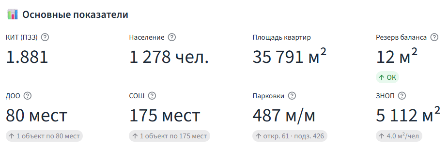
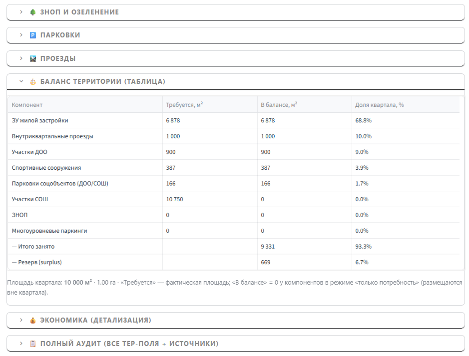
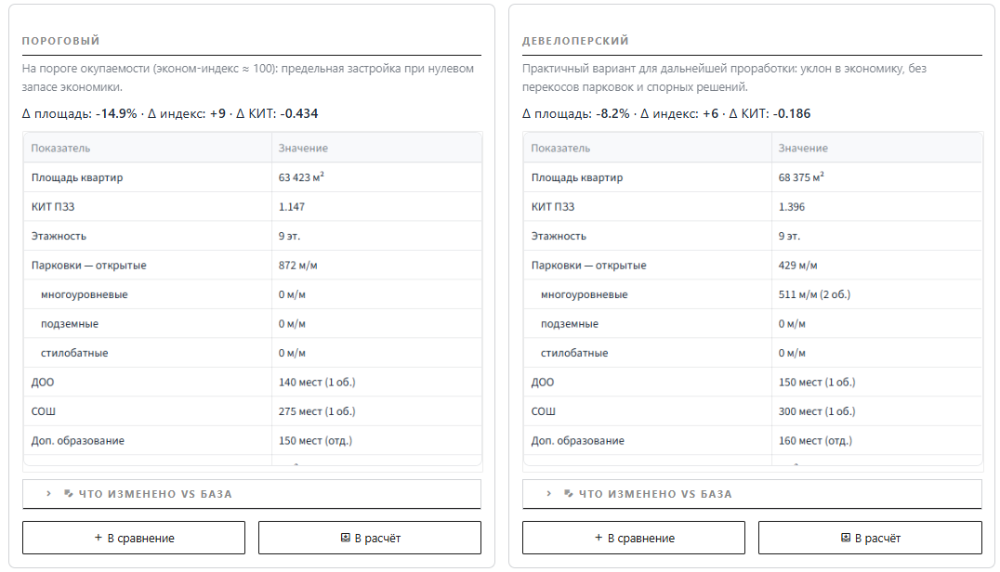
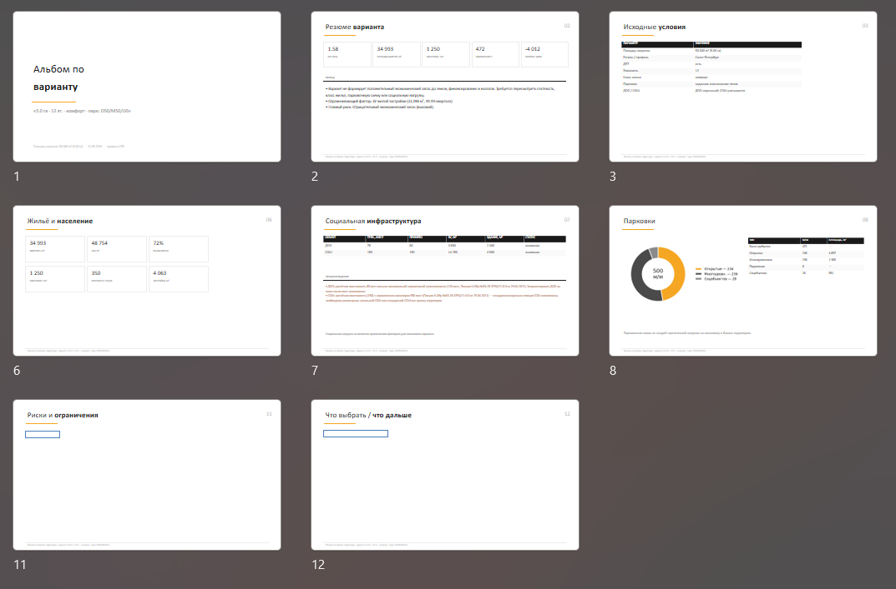

Задайте площадь квартала и ограничения — система подберёт максимально допустимый КИТ, сбалансирует территорию по нормативам и рассчитает ТЭП и экономику.
Один расчётный движок — все режимы. Каждый показатель несёт источник, формулу и статус. Нажмите на карточку — раскроется пояснение.
Бисекция находит максимально допустимый КИТ при выполнении баланса территории и всех нормативных ограничений.
Жильё, ДОО/СОШ, парковки, ЗНОП, проезды, спорт — с контролем 25%-озеленения и плотности 450 чел/га.
Открытые / многоуровневые / подземные; ДОО и СОШ по нормативам ПЗЗ с разбивкой на объекты.
Optuna подбирает лучшие сценарии по площади и прибыли; пофакторный анализ и чувствительность.
Кластеры этажности: покластерный КИТ и экономика, средневзвешенная этажность для баланса.
Себестоимость, выручка, выгодность; деловые отчёты в DOCX и презентации PPTX «под Заказчика».
Площадь, этажность (в т.ч. по зонам), что учитывать в расчёте.
КИТ, население, баланс территории, парковки, экономика — мгновенно.
Топ-3 рекомендации и пофакторный анализ «что улучшить».
Сравнение вариантов и выгрузка DOCX / PPTX для Заказчика.




Что это, какую задачу решает и как устроено — простыми словами.
Программа для предварительной оценки градостроительного потенциала территории. Она помогает быстро ответить на главный вопрос любого проекта застройки: сколько и чего можно разместить на участке, не нарушая нормативов, и насколько это выгодно.
Пользователь задаёт исходные условия — площадь квартала, регион, желаемый состав объектов и ограничения, — а программа сама подбирает максимально плотный, но допустимый вариант застройки, проверяет его на соответствие правилам и показывает итоговые показатели вместе с экономической оценкой.
Обычно оценка потенциала участка — это трудоёмкая ручная работа: прикинуть объём жилья, потребность в детсадах и школах, число парковок, площадь озеленения и проездов, проверить, влезает ли всё в границы квартала и не нарушает ли норм. Любое изменение условий заставляет пересчитывать всё заново.
Программа автоматизирует эту рутину и считает вариант целиком за секунды. Это позволяет не считать вручную, а играть сценариями: менять условия и сразу видеть, как это сказывается на плотности, составе и выгодности.
В обычном подходе проектировщик задаёт плотность застройки, а потом проверяет, выполняются ли нормы; если нет — снижает и проверяет снова. Это перебор вручную.
Программа работает наоборот. Пользователь задаёт рамки и состав, а она сама находит предельно допустимую плотность — ту, при которой территория ещё сбалансирована и все требования соблюдены, но больше выжать нельзя. То есть сразу выдаёт лучший допустимый результат. Если у пользователя уже есть свой замысел, программа умеет и просто проверить его на соответствие нормам.
Для девелоперов и инвесторов — быстрая оценка участка перед входом в проект. Для градостроителей и проектировщиков — проверка гипотез на стадии концепции. Для аналитиков и консультантов — сравнение площадок и вариантов между собой.
Инструмент рассчитан на специалистов, но не требует ни программирования, ни ручных расчётов — всё управление через простой веб-интерфейс.
Считает нормативный баланс территории, объём жилья и население, потребность в детских садах и школах, парковки трёх типов, площадь озеленения, спортивные площадки и проезды. Поддерживает разную этажность по зонам участка и произвольные нежилые и встроенные объекты.
Кроме расчёта заданного варианта умеет искать лучший: автоматически предлагает несколько улучшенных сценариев и показывает, какие решения сильнее всего влияют на результат. Каждый вариант сопровождается экономической оценкой и может быть выгружен в виде делового документа.
Для каждого варианта программа сопоставляет условную себестоимость строительства и условную выручку от реализации и показывает прибыльность и отдачу на вложения. Отдельно выделяется нагрузка от социальных объектов — видно, выгоден ли проект сам по себе.
Экономика считается в относительных, сопоставимых величинах, а не в рублях. Это сознательный выбор: он позволяет сравнивать варианты, не привязываясь к колебаниям цен. Это инструмент быстрого сравнения, а не финансовая модель для банка.
Расчёты опираются на действующие градостроительные нормы и правила землепользования и застройки. Каждый показатель можно проследить до конкретного правила-источника — результат прозрачен и проверяем. Программа не «придумывает» цифры, а применяет официальные требования. Сейчас она настроена на нормативы Санкт-Петербурга.
Она не рисует чертежи и планировки — это инструмент расчёта и оценки, а не проектирования. Не заменяет рабочую документацию и официальные согласования. Её экономическая часть — для прикидки и сравнения, а не для банковской финансовой модели.
Это намеренный фокус: программа делает одну вещь — быструю и обоснованную оценку потенциала и выгодности застройки — и делает её хорошо, не растекаясь на смежные задачи.